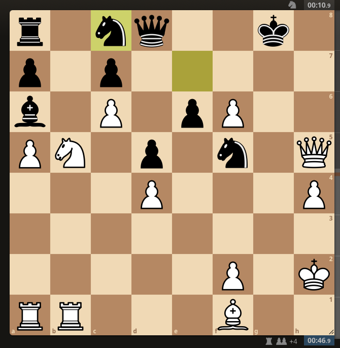
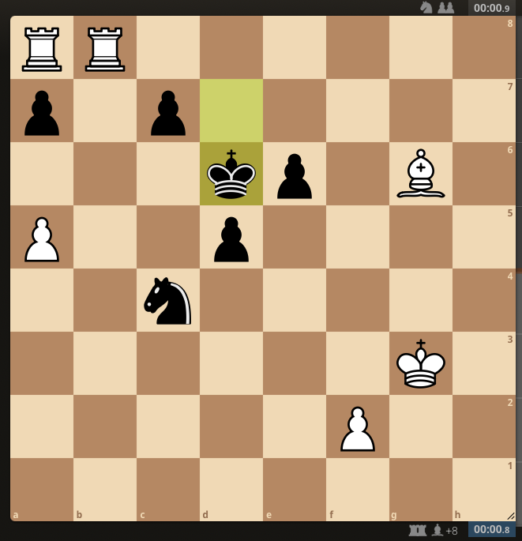
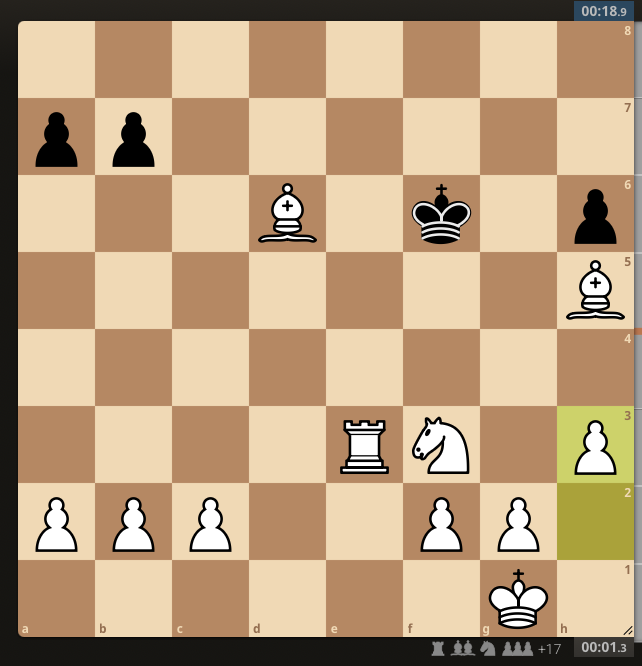

As an avid online chess player, it is extremely frustrating to have a winning position only to lose on time. Unfortunately, this happens to me quite frequently. When I watch the best players in the world, however, it seems that they can convert a winning position regardless of how little time is left on their clock (shout out to Eric Rosen). Generally speaking, it seems that higher rated players are better at managing their time, and are more adept at converting winning positions. I wanted to see if this was borne out in games played on Lichess. This gave me the idea to test out how time impacts the win probability of games across different skill levels.
I built a logistic regression model that predicts outcomes using player ratings, material count, and time remaining. I analyzed bullet games where each player starts with 1 minute, and blitz games where players start with 3 or 5 minutes. I only considered games with no increment (i.e., only considered games where no time is added after each move).
The Data
With the help of Claude, I wrote a python script that downloads games from Lichess’s public database. The script takes a player’s Lichess rating1 range as input, finds players who competed in recent Lichess tournaments within that rating range, and downloads a certain number of games from each of those players (I used a max of 500 games per player in my analysis). I downloaded games from three rating bands: 1000-1499, 1500-1999, and 2000-2499. Generally speaking, the 1000-1499 band contains novice to intermediate players, the 1500-1999 band contains intermediate to advanced players, and the 2000-2499 band contains advanced to master players.
With the games downloaded, I filtered out games with fewer than 10 moves, as it is unlikely that time played much of a role in these games. Then, I sampled a random position from each game, avoiding the first 5 moves and the last 5 moves. Sampling only one position from each games avoids the issue of data from the same game being heavily correlated. Not sampling positions from the first 5 moves reduces inclusion of positions that carry very little signal about the outcome of the game, while not sampling from the last 5 moves helps to reduce the amount of games that are nearly decided.
The Model
For each of these rating bands, I trained logistic regression models on 20,000 games each (80% training, 20% test), with a win for white as the response variable and the material difference between players, the rating difference between players, the move number, white’s time ratio (remaining time divided by started time), black’s time ratio, and the difference of these time ratios as the predictor variables. I trained nine models: one for each rating band and time control (bullet, 3-minute blitz, 5-minute blitz).
In blitz games, the rating difference and material difference are both more predictive than the time ratio difference. I think this is partially due to the fact that I downloaded games from Lichess tournaments. Pairing in tournaments works differently than normal pairing on Lichess in that players’ tournament standings are also taken into account. Because of this, a 2000-rated player joining late might face a 1400-rated player on a winning streak. These mismatches are probably inflating the importance of rating difference in the model.
In bullet chess, however, the time ratio difference matters substantially more. This is likely due to the fact that with 1 minute on the clock, every precious second matters. Spending even six seconds on a move removes 10% of your total time. Intuitively it makes sense that less starting time leads to time remaining being more important, which is what the data shows.

Looking at the coefficients for the time ratio difference, we can see that my hunch about stronger players being better at converting winning positions under time pressure is not really true. While in bullet chess the time ratio matters less for players in the 2000-2499 range, the coefficient is pretty similar to those for the other rating bands. And in 5-minute blitz chess, the coefficient for the highest rating band is nearly identical to those of the lower rating bands. That is to say, all else equal, time pressure appears to affect all players in approximately the same way.
Another interesting finding from this analysis is that in 5+0 blitz, the coefficient for material balance decreases at higher ratings, but the opposite is true for bullet chess (in 3+0, it is around the same for all rating bands). This indicates that the material difference matters more for stronger players in faster games, but less in slower games. In bullet games, perhaps this speaks to strong players’ offensive abilities. Up on material, they can press their advantage relentlessly and even somewhat recklessly given the quick nature of the games. In blitz games, this might be a sign of strong players’ defense. With more time to spare, they may be able to find ways to hold on even when down a pawn or two.
How Good is the Model?
To analyze the model itself, I performed a calibration analysis and an error analysis. For the calibration analysis, I compared predicted probabilities to actual win rates and tracked the distribution of predictions. Interestingly, the predictions for the 1000-1499 and 1500-1999 rating bands appear to be roughly normal, while the predictions for the 2000-2499 rating band have more predictions in the 0 to 0.1 and 0.9 to 1 range. This may be because stronger players are better at converting winning positions. In general, the model is well-calibrated across time controls and rating bands, with all Brier scores less than 0.2. In other words, when the model predicted a 70% chance of white winning, white actually won about 70% of the time (same for 80%, 90%, or any predicted probability).
For the error analysis, I inspected several games where the model was very confident but ended up being wrong. While the most confident predictions generally come from games where there is a large rating gap (because of the size of the coefficient), it doesn’t appear that there is one particular type of game or position that the model consistently gets very wrong. For example, in this 3-minute blitz game, for the sampled position, black is up a bishop, up on time, and rated 440 points higher than white. The model predicts a 3.8% chance of white winning.

However, just a few moves later, black misses a fork that blunders the black queen, which white finds. Black resigned.

In another blitz game, white is up the exchange (i.e., has a rook in exchange for a knight) as well as two extra pawns, and is rated 399 points higher than white. On top of that, black has 11 seconds left on their clock. The model gives white a 95.6% chance of winning.

Black then proceeds to move extremely quickly, causing white to run out of time and lose the game.

As you might expect, many of the errors from the bullet games are due to the favored side running out of time. One egregious error came from this game where white is completely crushing black, as we might expect given the 674 point rating gap. The problem is, white has one second left. Despite this, the model gives white a 99.4% chance to win, with the rating difference and material advantage overpowering the time situation. Unsurprisingly, white lost on time.

What’s Next?
It would be interesting to add Stockfish evaluation as a feature. At first glance we might think that engine evaluations would dominate the win probability, but given the inclusion of games with huge rating differences, I’m not so sure. One thing I did not consider for my analysis was correlation between features. Down the road this may be worth looking into, as multicollinearity may impact the interpretation of the coefficients.
The code for this analysis, including scripts for downloading games, extracting features, and training models, is available on GitHub.
In sum, my analysis found that time pressure affects all players pretty equally, especially in 5+0 blitz chess. While World Chess Champion Emanuel Lasker supposedly said, “When you see a good move, look for a better one,” in blitz chess, it’s probably worth it to just play the good move.
Footnotes
Lichess uses the Glicko-2 system, though the term ELO is still widely used to denote a player’s strength. This analysis uses Glicko-2 ratings.↩︎